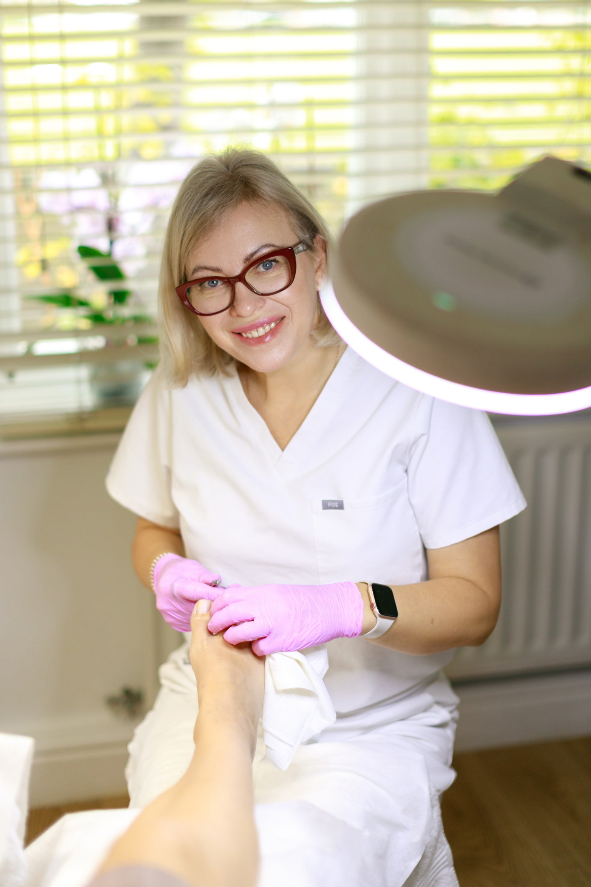
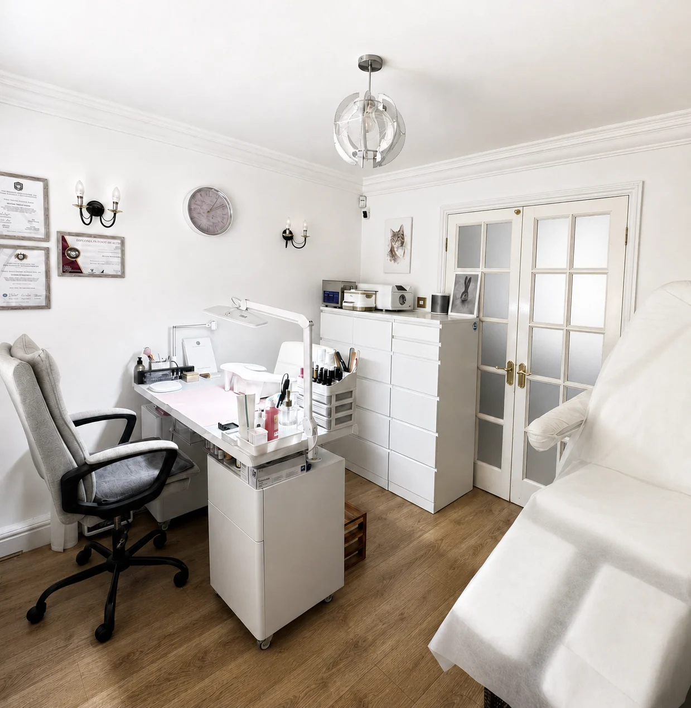
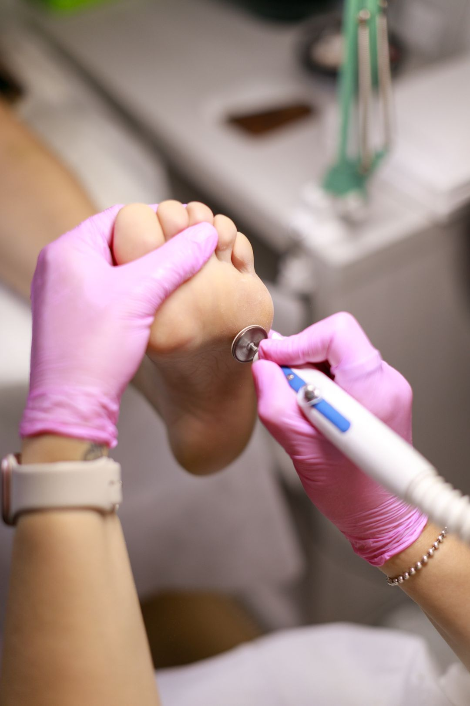
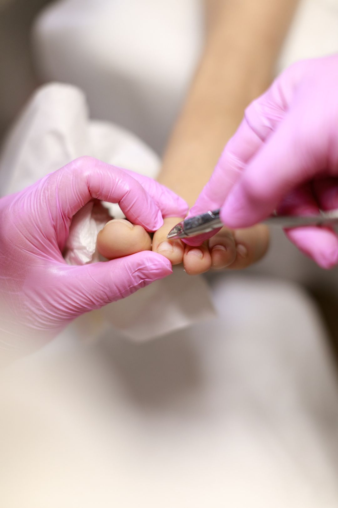
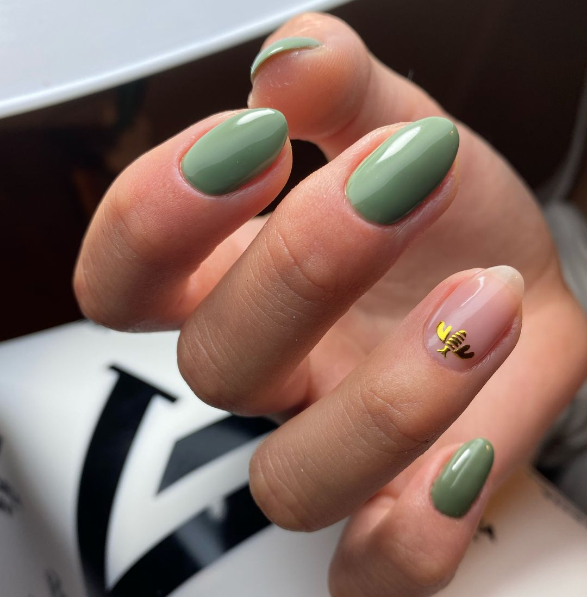
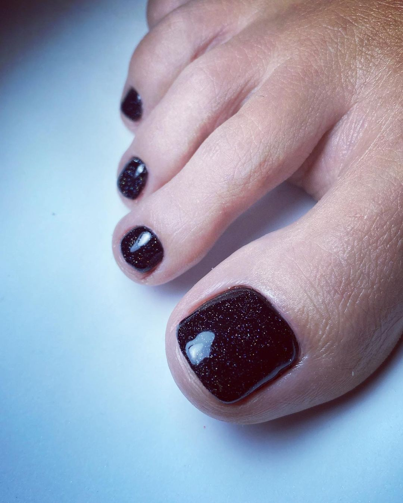

Start here: first appointment
Foot care appointment & treatment
Assessment and treatment for a skin or nail concern, with individual guidance.
45 min£75
Medical pedicure · Professional foot care in Hampton
Calm, thorough foot care with a Certified Foot Health Professional, provided privately, gently and without rush.

Certified foot health care
One client at a time
High-standard hygiene
Personal aftercare guidance
Comfort begins with care
Medical pedicure supports common skin and nail concerns with a careful, professional approach. Every appointment begins with what is comfortable for you and what your feet need now.
Medical pedicure treatments & prices
If you are unsure which appointment to choose, begin with a foot care appointment and treatment.
Start here: first appointment
Assessment and treatment for a skin or nail concern, with individual guidance.
Ongoing care
Continued treatment following your initial assessment.
Assessment
A careful review of foot condition, circulation and sensation.
Targeted care
Assessment and conservative care for nail-related discomfort.
Targeted care
A focused appointment for assessment and treatment.
The number of sessions required depends on the severity of the case.
First session£65
Follow-up£55
Targeted care
Professional reduction, care and practical ongoing advice.
More than one session may be needed depending on the severity of the case.
Routine care
Available after an initial appointment.
Nail correction
A non-surgical correction option for selected ingrown or curved nails.
Initial correction
One toenail£65
Two toenails£120
Follow-up
One toenail£50
Two toenails£90
Nail restoration
Restoration of the toenail plate for a more complete, natural-looking appearance.
One toenail£65
Two toenails£120
The Hampton studio
The treatment room combines specialist equipment, high-standard hygiene and the privacy of a one-to-one appointment.



Your appointment
Time to discuss your concerns, health information and what you would like help with.
Your feet are examined and an appropriate treatment approach is explained before beginning.
Unhurried care in the studio, followed by clear guidance for supporting your feet at home.
Also available


Natural-looking manicure and pedicure appointments remain available for clients who value meticulous preparation, premium products and a private setting.
Quietly professional
Natalia Pol works by appointment only in her private Hampton studio. Instruments are sterilised and disposable materials are used where appropriate.
As a Certified Foot Health Professional and registered member of the British Association of Foot Health Professionals, she brings a careful, considered approach to every appointment.
Book an appointment